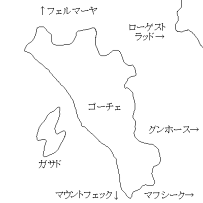
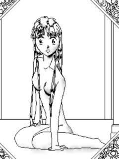
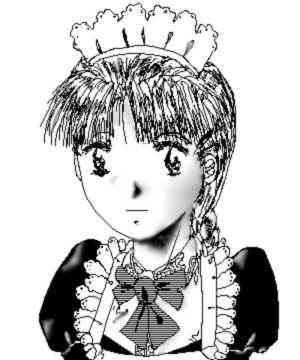
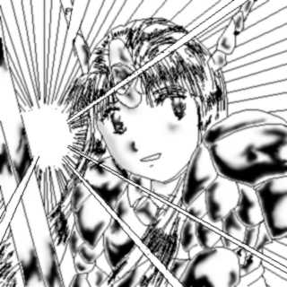
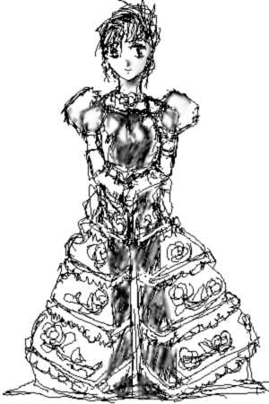

黄金の剣姫 序章
妖魔城の寵姫
文 ：ことぶきひかる
Ｃ Ｇ ：紫 寿 輝 峯
マップデザイン：ギルド開拓師団
「・・・デアル・ガ・リータ」
妖魔王は、呪文の最後の一小節を詠唱し終える。
「くるぞ！」
妖魔王と対峙していた冒険者達は、一斉に身構える。
妖魔王の目の前の空間が歪み、そして・・・大爆発が起こった。
妖魔王ダルリートの唱えた呪文・・・それは、本来、この世界に存在し得ない
物質，反物質を召還する，とてつもない魔法だった。
使い方によっては、町１つ，いや国１つさえ消滅させることが可能な，メテオ
ストライクをも上回る，大規模破壊魔法。
今は、召還された反物質の量がごく僅かだったためと、接触した通常物質が大
気であったため、この程度の威力で済んだのだが、それでも，パーティを壊滅寸
前に追いやるだけの力を持っていた。
爆発と爆風が治まった後、立っていられたのは，たった１人。チェインメイル
を身に纏い、バスタードソードを構えた戦士だった。
「レイバート、お前だけでも逃げろ・・・」
倒れてはいるが，辛うじて意識のあった，もう１人の戦士が声をかける。
「ばかやろう、俺１人だけ逃げるわけに行くもんか。だいち、敵さんが逃がし
ちゃくれないよ。それに、俺にはまだ切り札がある。」
そういいながら、レイバートと呼ばれた戦士は、ちらりと、倒れている他の仲
間を見た。
パーティの司祭であり，レイバートの恋人でもある、シェリスが瓦礫の下敷き
になっている。
まだ生きてはいるが、このままでは長くは持ちそうにない。
彼女を助けるためには、妖魔王を倒すしかないのだ。
バスタードソードを構えて，戦士は，大きく踏み込んだ。
「いくぞ。」
そう叫ぶと、戦士は、妖魔王めがけて駆け出した。
その無謀な行動に、ダルリートの顔が，嘲るように歪む。
だが、それを待っていたかのように，戦士の唇が、歌うように動いた。
「勝利と勇気を司る美しも武き乙女よ・・・」
彼の身につけていた黒いチェインメイルの一部が銀色に輝いていた。
銀は神聖な金属の代表であり、鉄や銅に比べて，魔法・・・特に精霊に関わる
魔法を阻害しにくい性質を持つ。
「ん、精霊使いか？」
戦士の詠唱の言葉に、妖魔王の表情が微かに翳った。
戦士だと想っていた相手が、精霊使いということは予想外のことだった。
「・・・光の槍をもって、我が敵を打ち砕け。」
妖魔王の隙を突くように、レイバートの魔法は完成した。
突如，空中に現れた光の槍が，妖魔王めがけて、疾走する。
精霊を使う能力の持ち主なら、今まさに槍を投げたばかりの戦乙女の姿を見る
ことが出来ただろう。
駆け出しを卒業したばかりの戦士程度なら，一撃で命を奪う力を秘めた恐るべ
き槍だ。
だが、妖魔王が自らの周囲に張り巡らせた魔法障壁は、巨人にさえ致命傷を与
えることが出来る槍を軽々と弾き返した。
妖魔王の顔に、余裕の笑みが浮かぶ。
突然、戦士は、構えていたバスタードソードを妖魔王めがけて投げつけた。だ
が、元々投げるためには造られていないバスタードソードは、途中で失速し、地
面に転がった。
「お前の切り札は、この程度か。」
妖魔王ダルリートは，嘲るような笑みを浮かべた。
次の瞬間，彼は、自分まで後数歩と迫った精霊使いの右手に何かが握られてい
ることに気づいた。
剣のようだが、レイバートが、先ほどまで持っていた長剣に比べれば、小刀の
ような代物だ。
だが、それは、小刀では済まない、重要な力を秘めていた。
クリス・ナイフ
美しく複雑な装飾の施された，この銀製の短剣は、周囲の魔力を打ち消し，あ
るいは減退させる力を持つ。
無論、戦乙女の槍が弾かれたことから分かるように、妖魔王の魔法障壁を破る
ことは、クリス・ナイフ程度では，まず不可能だろう。
しかし、レイバートの左手にも握られているものがあった。
中央に青い宝石が埋め込まれた首飾り・・・それは、魔力消失の力を秘めたア
ミュレットだった。
レイバートの切り札は、いくつもの段階を踏んでいた。
まず、妖魔王を動揺させること。
銀のチェインメイルを黒く塗り、鉄製のように見せかけて、自分が精霊使いで
あることを隠したのは，そのためだった。
２つ目に、妖魔王を油断させること。
レイバートの全魔力を注ぎ込んだ魔法でも、妖魔王に致命傷を与えることは、
まず不可能だった。
ならば、効かないことを承知で使えばいい。
妖魔王を動揺させたのは、このためだった。
動揺の後の勝利は、己の力を過信させ，敵を見くびることに繋がる。
元より、己の力に絶対的な自信を持つ妖魔王は、精霊使いの小細工を破ったこ
とで，更に慢心し、結果、レイバートは、貴重な数秒を稼ぎ出すことができる。
３つ目こそ，正真正銘の切り札だった。
クリス・ナイフと魔力消失のアミュレットの併用。
これならば、魔法障壁を越えることができるかもしれない。
そして、妖魔といえども、生き物にはかわりがない。
心臓を貫くことが出来れば、一撃で倒すことも可能だろう。
全ては、それにかかっていた。
アミュレットの力が発動した。
魔法障壁が減退していくのに気づき、妖魔王は、慌てて、それを修復しようと
する。
しかし、それより速く、レイバートの右手が動いた。
避けるには、余りにも近づかれ過ぎていた。
ダルリートの顔に，初めて戸惑いと恐怖の表情が浮かぶ。
レイバートは、渾身の力を込めて、ナイフを握る手を振り下ろす。
クリス・ナイフが、弱まった魔法障壁を貫いた。
その先端が、妖魔王の胸を捉える。
刃が肉を切り裂く確かな手応えを、レイバートは感じた。
その根本まで，クリス・ナイフが，妖魔王の胸に埋まる。
レイバートは勝利を確信した。
彼は、妖魔王の顔を見た。
そこには、苦痛と雑棒と死への恐怖に埋め尽くされた顔があるはずだった。
しかし，妖魔王の顔は笑っていた。
最後の悪あがきが。
死してもまだ、人間を嘲笑おうと言うのか。
憤怒が、心にわき上がった次の瞬間、レイバートの身体を電撃が貫いた。
ボロ切れのようになって、彼は、地面に転がった。
どうにか意識はあったが、既に立ち上がることは出来なくなっていた。
「な、なにがあったんだ？」
何かが近づいてくるのを感じ、上を見上げるレイバート。
そこには、自分の見下ろす妖魔王の姿があり，その顔には、変わらぬ嘲るよう
な笑みがあった。
「なかなかのものだったが，私を倒すには、後２、３手，駒が足りないようだ
ったな。
敢闘賞として教えてやろう。私の心臓は，ここにはない。」
そう言い放ちながら、妖魔王は、自分の胸に刺さっていたナイフを引き抜くと
、宙に投げた。
胸からは一滴の血も流れ出なかった。
ダルリートが、軽く手を振ると、クリス・ナイフは，空中で濡れた紙のように
，くしゃくしゃに丸まると，地面に落ち，転がった。
絶望の余り，レイバートの顔が、無念に歪む。
彼の表情を楽しむように，妖魔王の右手が、宙に複雑な紋様を描きはじめた。
大魔法で，蘇生不可能なほどに，とどめをさそうというのは，疑いようがない
。
（シェリス、すまねえ。）
自分が死ぬことより、恋人を救うことが出来なかったことを悔やみながら、妖
魔王の魔法が完成し，レイバートの意識は、どこかへと、引き込まれていった。
（これが，死か・・・）

「東ノ海」に浮かぶ島「ゴーチェ」
南北に永く伸びた形を持つこの島は、四季の季節感豊かな，自然溢れる地だっ
た。
大国ハルバーグを中心に栄えるこの島のすぐそばに，寄り添うように存在する
ガサドという小さな島があった。
ガサドは、妖魔の島でもあった。
他の国々や島では、ほぼ、均一に，妖魔が分布しているのに対し、ゴーチェに
おいては、このガサドに、妖魔の群が集中している傾向があった。
このため、ガサドは、流刑の地でもあった。
当然、ガサドには、人間は住んでいない。
漁師が、急な嵐の際に、避難場所として造った、粗末な船着き場とほったて小
屋がある以外、建物らしき物も皆無だ。
ガサドへの流刑は、遠回しの死刑と同じ意味を持っていた。
妖魔が、一カ所に集結していることで，その結果として，ゴーチェは、他国に
比べ，妖魔・・・特にゴブリンやコボルドなどの下級妖魔による被害が極めて少
ない傾向にあった。
だが、他国では、妖魔という共通の敵の存在により、仮初めとはいえ、同盟締
結などによる平和が訪れたこともあったが，ゴーチェには、それがなかった。
ガサドという，陸続きではない地であるがためもあったが、最大の理由は、ゴ
ーチェとガサドの間に存在する海流にあった。
ゴーチェ周辺を流れる海流が、ガサドとの狭い海峡に流れ込んでくることで生
じる，巨大な渦巻きのようなこの海流を乗り切れる者は、地元の漁師達の中でも
、そうそういない。
このような場所を妖魔がわたってこれるとは想えず，ゴーチェの各国は、勢い
，ガサドとそこに巣くう妖魔への警戒を怠るようになっていた。
だが、ここ数年、ゴーチェ本島での、妖魔の目撃例・・・それも、ゴブリンや
コボルドだけではなく，ダークエルフやオーガ，トロール、果てには、ドラゴン
らしきものまでが、人々の噂に上り始めていた。
ある辺境の村で、レイバートやシェリスは、妖魔王を名乗る存在の討伐を依頼
されたのは、そんな頃だった。
おそらく、力任せに、下級妖魔を支配することに成功した戦士か魔術師の仕業
だろう。
永きにわたって、妖魔の侵攻を受けていない時代が続いていたため、油断して
いたことは否めなかった。
だが、その慢心と、油断が、レイバート達を、壊滅寸前の危機へと追いやるこ
とになった。
「貴方、精霊使いなの？」
初対面の彼女の言葉は、かなり、ぶしつけなものだった。
確かに、隆々とした体格のレイバートをみて、戦士だと思う者はいても、精霊
使いだと思うものは、かなり少数だろう。
オマケに、鎖帷子を纏い、長剣を腰に帯びていたのだから。
レイバートとシェリスの出会いは，ある町で、他の仲間と共に，シェリスの護
衛を引き受けたことだった。
当時、ある神殿の神官だった彼女は，遠方への伝書の配達のため，その途中の
護衛を求めて、レイバート達に声をかけたのだ。
当時、レイバート達は、駆け出しを卒業し、目下売り出し中の冒険者となって
いた。
そんな彼らに、シェリスが声をかけたのも、当然の成り行きと言えた。
いきなりのぶしつけな態度に、レイバートは、仕事とはいえ，彼女のことを毛
嫌いせずにはいられなかったが，護衛の旅の中で、次第に彼女のことを理解して
いった。
ぶしつけな態度も、高慢ちきと言うより，飾らない性格のためであり，彼女自
身に悪気はないこと。
そして、飾らない性格だけに、彼女は，すぐに、レイバート達と打ち解けた。
激しい感情は、時として、その反面へと移行することがある。
レイバートの彼女への嫌悪が，好意に変わるまで、さして時間は必要とはしな
かった。
気がつくと、冷たい・・・石造りらしき床の感触があった。
その冷たさが、否応なしに意識を半ば無理矢理に回復させる。
突然、意識を失う直前の出来事が、雪崩れるように蘇ってきた。
「！」
起きあがろうとした瞬間，全身に激痛が走る。
四肢が、いや指先さえ、想うように動かない。
妖魔王の一撃は、彼の身体を、多少休んだくらいでは，回復できないほどに，
痛めつけていた。
すぐ、そばに、誰かいるという気配を感じ取り，なんとか、その姿を見ようと
，レイバートは、身体を震わせる。
辛うじて、首をそちらに向けることは出来た。
そこに立っていた人物が、レイバートの動きに応えるように口を開く。
「我が住処，妖魔城へ、ようこそ。レイバート君。」
「よ、妖魔王！お、俺は、一体・・・ここは？！」
「いっただろう。妖魔城・・・我が住処と。
このようなあばら屋へ、無理矢理、お連れすることには、少々、気が引けたが
ね。」
妖魔王の、嘲るような謙遜に，レイバートは，胸くそが悪くなった。
白い床，天井，柱は、傷１つなく，掃除婦の大軍が、１年がかりで磨き上げた
かと想えるくらい，光り輝いていた。
ボロボロになった自分の存在が、ひどく場違いなものに想える。
これが、あばら屋だというのなら，世界中のあらゆる城あらゆる宮殿がアリの
巣以下の存在だ。
「この５００年、私の身体に傷らしい傷をつけたのは、君だけだったのでね。
その行為に敬意を表する意味も含めて，見窄らしい我が家へ、招待したわけだ。
おっと、感謝の言葉はいらないよ。これは、あくまでも、私の一方的な好意だ
。」
腰をかがめて，妖魔王は、レイバートの顔を見下ろした。
自分の無力さに、レイバートは，唇を噛みしめた。
剣とは言わない。せめて、鉄串の一本でもあったのなら、その額に突き立てて
やるのに。
何もできない歯がゆさに、レイバートの顔が歪む。
今の彼に出来ることは、ダルリートの顔を睨み付けることだけだ。
不意に、妖魔王の顔に歓喜が生まれる。
「素晴らしい！立つことすら出来ず、私が指先を動かしただけで，死神の鎌が
振り下ろされると言うのに，弱まるどころか、ますます沸きあがってくる憎悪と
闘志。
人間にしかない，自分より強い存在には媚びることしかしらない妖魔には存在
しない、恐ろしくも美しい感情の炎。
全世界の珠玉を集めたとしても、その一瞬の輝きにすら勝てないだろう。
天地海のあらゆる華を集めたとしても、その花びら一枚にすら及ばないだろう
。」
歓喜に、整った顔を歪めながら，ダルリートは、呟くように言葉を繋いだ。
「私のそばに飾るに、相応しい存在だ。」
値踏みするように，レイバートのまわりを、妖魔王は歩き回った。
「とはいえ、このままでは、飾るにしても、少々不格好だ。
過剰な装飾は、珠玉の輝きを損なうものだが、といっても、原石のまま飾るわ
けにはいくまい・・・ふむ、やはり、手を加えるべきか。」
レイバートを見つめるダルリートの表情が、妖しく歪む。
「く、俺に、何をする気だ。」
「君を、私を飾るに相応しい姿に変えさせて貰おう。
金ではなく白銀の控えめな光が、宝石の輝きを際だたせてくれるように、その
姿は、君の憎悪を、更に燃え立たせてくれるはずだ。」
「やめろ！ひと思いに殺せ！」
「今の君には、死という選択肢すらない。あるのは、私に従わなければならな
いと言うことだけだ。」
妖魔王の両手が複雑な動きを見せる。
石像か、それとも，妖魔か、いずれにしても、屈辱的な姿に変えられることは
間違いない。
全身を，引き延ばされ、丸められ、引きちぎられる，まるで粘土細工にでもさ
れているような感触が包み込む。
本来の人間の身体では，体験することの出来ないその感触に、レイバートは再
び意識を失った。
夜明けの昇陽の様に、うっすらと少しずつ意識が戻り始めた。
意識の回復と同時に、腕や脚から，冷たい感触が上ってくる。
どうやら、自分は石畳の上に横たわっているらしい。
と同時に，身体全体にまとわりつこうとする、何本もの，細く長く滑らかなも
のの感触があった。
なんだろう？
そう想いながらも、身体が想うように動かなかった。
四肢はおもちろん、指先や瞼さえ，他人の身体のように，動いてくれなかった
。
意識を奮い立たせて、四肢に力を込める。
両腕の力を借りて，レイバートは、どうにか、上半身を持ち上げた。
視界の正面に，いきなり、人影が現れた。
顔を上げたレイバートは、絶句した。
忘れるはずがなかった。
忘れるわけにはいかなかった。
彼の目前に立っているのは、妖魔王ダルリートに他ならなかった。
レイバートの凍り付いた表情が、憤怒に変わる。
だが、感情とは裏腹に，身体は、動こうとはしない。
動かない身体に，レイバートの怒りと焦りが高まっていく。
「そう怒るものではないよ、精霊使い。折角の顔が台無しだ。」
「ダルリート、何故，オレを殺さない。何故、生かしておく。」
「ほほお・・・死が怖くないのか。では、その理由を説明しよう。立ち上がれ
。そして，見るがいい。」

レイバートのすぐ目の前に、巨大な鏡が出現した。
妖魔王に案内され，レイバートは、ある一室にたどり着いた。
中に入ると、そこは、ベッドに、クローゼット，化粧台など、一通りの家具の
揃った，女性向け・・・侍女の物らしき部屋だった。
「美しいとはいえ、裸のままでは、少々見栄えが悪い。
その中に、着替えが入っている。見てみるがいい。」
言われるままに、クローゼットを開けると，女性用の下着や、ブラウスやワン
ピース，エプロンなど侍女の服などが、詰め込まれていた。
ワンピースなどはともかく，下着はどうした物か、一瞬、レイバートは、躊躇
する。
「安心しろ。今のお前には、それらの衣服の身に付け方はもちろん、侍女とし
ての礼儀作法など、全ての知識が備わっているはずだ。」
妖魔王の言葉に、レイバート、冷や水をかけられたかのような衝撃を受けた。
ダルリートの魔力は、姿だけではなく、記憶までも操ることが出来るのか。
「その気になれば、お前の意思を、全く別なもの・・・私に従うことしか知ら
ぬものに，置き替えることも可能だ。もっとも、そのようなことをしては、お前
の憎悪までも消してしまうことになるがな。」
「そちらのドアの向こうが、浴室になっている。無理にとはいわんが，女性で
ある以上、身だしなみには、気を使って貰いたい。」
余計なことをしすぎたかといわんばかりの、自嘲的な笑みを浮かべながら，妖
魔王は、部屋を出ていった。
１人取り残される形のレイバート。
だが、ダルリートのいった通り，レイバートの頭の中には，女性としての服の
身に付け方，化粧の仕方、侍女としての礼儀作法などが、寸分洩らさず、刷り込
まれていた。
下着の付け方から、侍女の服のボタンの止め方、リボンの結び方、浴室での身
体の洗い方に、眉や頬、唇の化粧の仕方まで。
まるで、つい先ほどまで、自分は、女性として生きてきたのではないかと錯覚
に陥りそうになるほど、その記憶は、鮮明かつ精細なものだった。
危うく、自分が、本当は、侍女ではなかったかと思いかけたほどだ。
「いや、そうじゃない。おれは、男だ。男で、精霊使いのレイバートだ！」
そう叫ぶことで、どうにか、自分を取り戻そうと鼓舞する。
どうにか、自分を取り戻すと、レイバートは、取りあえず、部屋の中を確かめ
てみることにした。
もう１度、クローゼットの中を確かめてみる。
開き戸の中には、黒いワンピースやエプロン、ブラウス・・・
１段目の引き出しの中には，様々な下着・・・ブラジャーやパンティだけでは
なく、ガータベルトやコルセット、ボディスーツまでもが、丁寧に折り畳まれた
上で詰め込まれていた。
下着の一つを取り出してみると、それは、下着としての役目を果たせないので
はと想えるほど，複雑なレースとフリルの飾りで，覆われていた。
その華麗さと美しさに関わらず，レース独特の透けるような隠微さに気づき、
レイバートは，慌てて，下着を押し込めると、引き出しを閉じた。
２段目の引き出しには、寝間着やタオルなど・・・
何気なく、鏡台に目をやると、そこには，女性が必要とする化粧品やその道具
が全て揃っていた。
化粧水に、口紅頬紅、ファンディーション，アイシャドゥ・・・
引き出しには、髪飾りやネックレス，イヤリングが、まるで子供の玩具のよう
に，無造作に詰め込まれている。
その１つ１つには、それだけで、一財産になろうかと想われるほどの宝石が埋
め込まれていた。
鏡台に埋め込まれている鏡も、あの時の鏡同様、そこに１人の人間が現れたの
ではないかと想えるほど，鮮明な像を映し出す精巧なものだった。
部屋の奥には、確かに、浴室も用意されていた。
どこから、流れてきているのか，浴槽には、湯が、満たされ，溢れ、流れ出し
ている。
浴室の壁に据え付けられた，ほぼ全身が映し出されるほど大きな鏡に、レイバ
ートは、改めて，自分の姿を映し出させた。
そこに映っているのは、女性の・・・少女の身体に他ならなかった。
長い髪、整った柔らかい輪郭の顔つき，長く細い眉毛，優しげな少し潤んだよ
うな眼差し，小さく，やや低めだ可愛らしい鼻、小さく、どこか微笑んでいるよ
うな唇，小さな肩と，そこから伸びる細い腕、華奢な手、小さな指，単なる肉の
弛みではない胸の膨らみ、引き締まったという言葉だけでは説明しきれない腰の
くびれ，突き出すように膨れた臀部・・・少なくとも，男の身体には見られない
特徴を備えたその肉体は、まだ少女とはいえ、女の身体に他ならなかった。
そっと、膨らみきっていない乳房に指をあてる。
その指も，細く長く美しい。
桜色の形の整った爪は，まるで、貝殻か花びらを想わせた。
そのまま、指に力を込めると，鏡の中で、乳房が歪んでいくのが分かる。
柔らかいにも関わらず、そのまま歪むことに反抗してみせるような弾力感が伝
わってくる。
心なしか、鏡に映るの少女の顔が，赤くなっていくようだ。
慌てて、レイバートは、乳房から手を離した。
妖魔王に勧められたというわけでもないが，冷たい床の上に長時間横たわって
いたせいか，身体が冷え切っていた。
レイバートは、ヘアピンで、長い髪をまとめると，浴槽に，身を沈めた。
湯が、浴槽から溢れ出し、抜け落ちた髪を巻き込んで、流れ去っていく。
浴槽から、腕を持ち上げると、滑らかな肌は水を弾き、湯は、水滴となって転
がり落ちた。
僅かに腕を震っただけで、僅かに残っていた水滴が、弾け落ちる。
まだ少女といえる年頃だけに許された瑞々しい肌。美しい肌。張りのある肌。
今の自分が、少女であるという事実を執拗なまでに誇示してくる自分の肉体・
・・
ともすれば、一思いに、命を絶とうとすら考えてしまう。
だが、レイバートは、危ういところで、その考えを押し止めた。
そう、シェリスがいる。
シェリスのために。
例え、どのようなことがあろうとも，どのような理由があろうとも、彼女を見
殺しにすることだけはできなかった。
浴室から上がったレイバートは、体を丹念に拭くと、まだ乾ききっていない髪
を、タオルでまとめ，クローゼットから、着替えを取り出した。
中身は、全て、侍女の服か、寝間着ばかりだったので，迷う必要はほとんどな
かった。
まず下着を身につけてみると、圧迫感や束縛感を覚えつつも、その肌触りの良
さに、一瞬ながらも、うっとりとしてしまう。
滑らかで、肌に吸い付こうとするその感触は、どうやら、シルクらしい。
下着を身につけ終えると、奇妙な安定感というか安堵感が，あった。
裸身の時に比べ、下に引っ張られるような胸の感覚が，かなり和らいでいた。
それが、胸の・・・乳房のせいだということに気づき，レイバートは顔を赤く
する。

続いて白いストッキングを，ガータベルトで固定し，糊の利いた白いブラウス に袖を通す。
不意に、鐘が鳴る音が聞こえた。
甲高い鐘の音は，３度響く。
３度の鐘は，妖魔王の食事を意味する。
既に、身仕度を済ませていたレイバートは、厨房へと急いだ。
厨房にたどり着いたレイバートは，そこにいるのが、自働機械人形や，パペッ
トゴーレムばかりで、妖魔王自身と自分を除けば、生きているモノは皆無に等し
い事に気づいた。
ここにくるまでの廊下でも、清掃係らしき、自働機械人形にしか出会っていな
い。
そういえば、妖魔王は言っていた。
自分より強い存在には媚びることしかしらない妖魔には存在しない、恐ろしく
も美しい感情の炎。と。
おそらく、同じ妖魔でありながら、ダルリート自身は、そのような存在である
妖魔を、嫌悪しているのかも知れない。
食事の載ったワゴンを，妖魔王の居室へと運ぶ。
オークらしき木材で造られた巨大なドアをノックする。
「ダルリート・・・様，お食事をお持ちしました。」
「入れ。」
扉は、誰も触っていないにも関わらず、ひとりでに開き、レイバートは、ワゴ
ンを、部屋の中へと押し入れた。
ダルリートは、何か読み物の最中だった。
レイバートの姿を一瞥すると、何事もなかったかのように、読書を続けた。
部屋の中央に置かれた，テーブルに、食事を並べる。
前菜が並んだことを確認すると，妖魔王は、席へと着いた。
催促するように、グラスを持ち上げ、傾ける。
レイバートは、赤ワインの瓶を取り出すと、コルク抜きを差し込んだ。
ワインのコルクを開けると、鉄の臭いが鼻を刺激した。
それが、赤ワインではなく、血，それも人間の物であることは疑いようがなか
った。
嫌悪感と、それを、注がなければならない事への屈辱感，そして怒りで，レイ
バートは、自分の衝動を抑えきれなくなっていた。
瓶を持つ手が，ガタガタと震える。
「どうした？緊張しているのは分かるが、少々、行儀が悪いぞ。」
デキの悪い生徒を優しく窘める教師のような口調と表情を、妖魔王は、レイバ
ートへと向ける。
「も、申し訳ございません・・・」
怒りが、この瞬間にも臨界点を超えて、吹き出しそうになるが、辛うじて、堪
えることができた。
レイバートが、必死に自分を押さえている様を楽しむように、ダルリートは、
食事を始めた。
スープは、鶏肉から取ったらしい、透明感のあるコンソメ風のもの。
前菜は，香味野菜をふんだんに使った，温野菜サラダ。これに、チーズとクラ
ッカーが添えられている。
メインディッシュは，子羊の背肉のソテー。これにも、香味野菜を使ったソー
スがかけられていた。
デザートは，砂糖漬けの青林檎を使った、清涼感溢れるタルト。
その全てを、食べ終えると、最後に、紙のように薄い磁器のカップに注がれた
紅茶を，まるで香りだけを楽しんでいるかのように、少しずつ、口に含む。
１時間近くかけて、妖魔王の食事は終わった。
「お前の食事は，厨房に用意させてる。片づけが終わったら、休憩を取るがい
い。」
その言葉に、レイバートの脳裏に，先ほどの、赤ワインが蘇った。
レイバートの心を見透かしたように、妖魔王が口を開く。
「安心しろ。お前の食事には，人の血も肉も入っておらん。
折角、手に入れた侍女が、人喰い鬼では、私も、少々，気が削がれるというも
のだ。」
妖魔王の声を背中で聞き、屈辱にまみれながら、レイバートは、その部屋を後
にした。
よく考えて見れば，この城に来て以来、何も口にしていなかった。
急に空腹を覚え，レイバートは、ダルリートの言われるがまま，厨房に足を入
れた。
妖魔王の言葉に嘘はなかった。
それどころか、厨房に用意されていた食事は、一般庶民のレベルから言えば、
かなり贅沢なものだった。
山海の珍味とまではいかずとも、牛肉や，焼きたての白パン、新鮮な野菜果物
ミルクに魚，香料をふんだんに使ったソース、刺激の強い香りを漂わせる乾酪な
ど、一目見ただけで、食欲を刺激するような食べ物が、たっぷりと用意されてい
た。
それらを見ている間にも、自働機械人形達が，オーブンから、パンやロースト
チキンを取り出し，ハムに香料を振りかけ，肉やベーコンを手際よく切り分けて
いく。
レイバートは，煮込んだ牛肉にソースをかけ、パンと、いくつかの果物を皿に
盛ると、適当な椅子に座って食事を始めた。
厨房には、ワインやビールの樽なども並んでいたが、先ほどの赤ワインのせい
か、それとも、少女の姿に変えられたため嗜好が変化したのか、それらのアルコ
ールには、食指が動かなかった。
白パンを口にした瞬間、その柔らかさに、レイバートは息を呑んだ。
焼きたてということを考慮しても、信じられないほどの柔らかさだった。
試しに、果物を口にしてみると、それは季節のモノではないにも関わらず、ま
るで、取り立てのように甘く瑞々しい。
牛肉にナイフを入れてみると，ほとん抵抗なく，刃が、肉へと入り込んでいく
。
まるで、王侯貴族の晩餐のメニューが，この厨房には，並んでいるかのようだ
った。
牛肉を細かく切り分けながら，黙々と口へと運ぶ。
味は悪くない・・・それどころか、生半可な貴族の食事より、遥かに、丹念に
作られている。
ふと、レイバートは、自分が、かなり礼儀正しく食事をしていることに気づい
た。
普段なら、肉にかぶりついているはずなのに，今は、きちんとナイフとフォー
クを使い分けている。
妖魔王の魔法は、こんな細かいところにまで，レイバートに影響を及ぼしてい
るらしい。
ダルリートの芸の細かさに、苦笑しかけたレイバートは，そこまで、他人の心
を細工することが出来る妖魔王の力に悪寒を覚えた。
そんなことを苦もなくやってみせる存在に、人間が勝つことが出来るのだろう
か。
だが、今、レイバートが考えなければならないことは、シェリスのこと、そし
て、次の仕事のことだった。
食事を取り終えたレイバートは、次の仕事に備えて、自分の部屋へと戻った。
給仕を終え，普段なら，そこで，レイバートは部屋へと下がるのだが、その日
は違った。
「今日は、少し外出せねばならん。そこで、お前には，私の護衛をして貰おう
。」
ダルリートの言葉に、レイバートは訝しんだ。
男・・・熟練の精霊使いであったときならいざ知らず、今のレイバートは、か
弱い少女の身・・・しかも，精霊魔法も使えなくなっているのだ。
しかも、ダルリート自体，分厚い城壁と深い堀に幾重にも囲まれ、１０、００
０人の射手と１０、０００人の歩兵と１０、０００騎の騎士が常駐する難攻不落
の要塞同然の存在なのだ。
それを、今のレイバートが護衛するなど、ドラゴンにトカゲがまとわりついて
いるようなものでしかない。
「その格好では、いくらなんでも、護衛には不向きだな。部屋に，甲冑を用意
してある。着替えてくるがいい。」
部屋に用意されていたのは、白い甲冑だった。
姿が変わったとはいえ，鎧の着方ぐらいは覚えている。
肌を保護するための，厚手の布製の下着を着込み，ブーツをはく。
板金でできているのは、胸から腹部にかけてと、護手，そして臑のあたりだけ
で、その他の部分は，鱗状の金属片もしくは、硬質の革が垂れ下がるように覆っ
ている。
ブーツにも臑や爪先、踵を保護するように，鉄片をあてられてた。
身体の方が、ほぼ全身を覆うような形状なのとは裏腹に、頭部の保護は、羽根
を模した飾りの付いた額当てのみである。
これは、レイバートの顔を隠すような無粋なことをしたくないためだろうか？
甲冑を纏ったレイバートの姿は、槍ではなく剣をもっているという点を除けば
、戦乙女を想わせるものがあった。
「ほほお、なかなか似合っているな。もっとも、お前に合わせて造ったものだ
から，似合わないわけがないが・・・」
妖魔王は，着替え終えたレイバートの外見を，品定めするように見回してから
、そう感想を洩らす。
レイバートは、ただ無言で、妖魔王を睨み付けた。
「自分を殺そうとしていた相手に、剣を持たせたことが不思議なのか。」
（！）
妖魔王に言われるまで、気づかなかったのだが、確かに、この間合いからなら
、妖魔王の身体に必殺の一撃を与えることが可能だ。
無意識のうちに、柄を握る手に力がこもる。
「もっとも無駄なことだがな。その剣も鎧も、私が創り出したものだ。私がそ
の気になれば、消すことも、大根にすることも，そして、お前の胸に突き刺すこ
とも可能だ。」
妖魔王の言葉に、レイバートの全身から血の気が引いた。
確かに、その通りだ。
そうでなければ、人質がいるとはいえ、つい先日まで、自分を殺そうとしてい
た者に、武器を預けるような真似などしないだろう。
「ついてこい。」
それだけ告げると、妖魔王は、さっさと歩き始めた。
レイバートは，慌てて、その後を追う。
妖魔王がたどり着いた先・・・その部屋にあったのは、巨大な・・・馬２、３
頭が楽に入りそうな魔法陣と、それを取り囲む、６つの燭台だった。
「こ、これは？」
「転送装置だ。私１人ならともかく、おまえというオマケがいたのでは、瞬間
移動も，骨だからな。」
ダルリートに促されるままに、彼と一緒に、魔法陣の中に、レイバートは、足
を踏み入れる。
魔法陣の中央に設けられた小さなテーブル，その上には、ルーンの刻まれた１
２個の宝石が並んでいた。
ダルリートは、慣れた手つきで、その石を並び替えていく。
最後の１つが、置き直されると、魔法陣を描いている線が光り始める。
「な、なに？」
驚きと同時に、レイバートは、軽い浮遊感を覚えた。
なに？！
と想った時には，景色が一変していた。
レイバートと妖魔王が立っているのは、かなり深い山中と想われる、断崖の前
だった。
「ここだ。」
ダルリートが指さした岩壁に，１つの扉がついていた。
６頭立ての馬車でさえ，楽に通れそうな、城の門を想わせる巨大な扉だった。
「１０００年前に栄えたカーヴェス王国の時代に、非常時の脱出経路として，
掘られた大トンネルだ。」
カーヴェス王国・・・
今より、およそ９００年前に滅んだと言われている，古代の王国。
王国崩壊の際、関連する書物などの記録のほとんどが消失してしまったため、
その全貌は明らかではないが，数少ない伝承によれば，その力は、竜すらも支配
し、夜を昼に変え、島を空に浮かせ，大河の流れを逆流させたとさえ言われてい
る。
もし、王国と共に失われた技術の半分でも残っていたならば、人間は、この世
界の妖魔を全て根絶させていたとも言われているし、おそらく，それは、誇張で
はないだろう。
「敵に追跡されたり，利用されることを防ぐために、内部には、無数の枝道や
仕掛けが施されている。
一度，迷ったら二度と出ることは適わない。
工事中の死亡者も数え切れなかったが、結局，秘密を漏らさないために、工事
に関わった設計者や責任者、労働者までも，全てが殺害された。
通路の中は、工事中に死亡したり，殺された労働者の怨念の声で満ちているそ
うだ。」
扉の向こうから、恨めしい声が漏れてきそうな気がして、レイバートは、身を
硬くする。
「皮肉にも、この大工事のため、民はおろか、側近にまで見放されて，カーヴ
ェス王国は、滅ぶことになった。」
それは、レイバートも知る伝承の通りだった。
カーヴェス王国の王族は、民の反乱に呼応した内部からの造反劇により，呆気
なく、囚われの身となった。
王族達は、見せしめのため、１０日以上にわたり、考え得るあらゆる拷問によ
る公開処刑に果てに殺害され、更に，その屍は、腐敗防止の魔法をかけられ、数
十年にわたり、さらし者にされたという。
だが、彼らの欲望により犠牲なった者のことを考えれば、それらの処刑も，温
情に篤いものだったと言わざるを得なかった。
王族達の楽しみだけのために殺された人数は、数万人に及ぶと言われているの
だ。
そんなカーヴェス王国のトンネルとなれば，そこに，どれだけの怨念が詰まっ
ているか、想像すらできない。
ダルリートが、僅かに手を触れただけで、巨大な扉は、重い音をたてながら、
ゆっくりと開いていく。
「入るぞ。」
それだけいうと、妖魔王は、躊躇の欠片も見せず，暗闇に埋まった洞窟の中に
足を踏み入れる。
レイバートは，慌てて、その後を追った。
「だ、ダルリート様、ここに、一体・・・」
洞窟の中は、墨を溶かしたかのような暗闇が、満たしている。
先ほどの開いた扉の隙間から射し込む光だけが，辛うじて、視界を確保してい
たが、それでも、数メートル先が，見えなくなってしまうほどだ。
不安に駆られたレイバートが、そう聞いた瞬間、想い響きをたてて、扉が閉ま
った。
入口から射し込んでいた僅かな光さえも途絶え、洞窟は、完全な闇に閉ざされ
る。
「ダルリート様！」
「安心しろ。出ようと想えば、この程度の洞窟，いつでも出られる。」
自信に満ちた妖魔王の言葉に，一瞬，安心しかけるレイバート。
「もちろん、生きていればだがな。」
その言葉は，ここに，生命を脅かす，何かがいることを、物語っている。
「このように闇と怨念に満ちた場所は，下級の妖魔，特に幽鬼どもが、好んで
棲まう。」
そう呟く、妖魔王の言葉は、なにかを招いているかのようだった。
「ほら、早速，来たようだぞ。」
暗闇の向こうから、恐ろしい，悲鳴とも雄叫びとも，区別できぬ物音が響いて
くる。
レイバートは、反射的に，身構え、剣の柄に手をかけた。
複数の何かが、近づいて来るという気配は，確かに感じ取れたが、吸い込まれ
るような暗闇の中では，いくら目を凝らしても、それを見出すことは出来ない。
「暗闇では，流石に，どうにもならんか。なら、これで、どうだ。」
不意に、空中に，光が生まれた。
２人の周囲が、真夏の日中のような明るさに包まれる。
そこは、舞踏会が開けそうなほどの広間になっていた。
光に照らし出された気配の正体を、レイバートは確認した。
レイスやスペクターと思しき、悪霊が，ダルリートとレイバートを取り囲むよ
うに迫ってくる。
一瞬の迷いも見せず、レイバートは、剣を抜いた。
光一閃！
抜刀した時の勢いを利用して，一刀の元に，１体の悪霊を切り捨てる。
返す刀で、更に，もう１体！
一撃を受けた幽鬼は、か細い・・・にも関わらず，悪寒が走るような耳障りな
悲鳴をあげながら、霧散するように闇の中に消え失せていく。
たちどころに、２体の仲間（悪霊に仲間という概念があればだが。）が、やら
れたことで、悪霊達は，範囲の輪を，一時的に後退させる。
ふと、脇に視線を向けると，妖魔王は、見まがえ警戒するどころか，その素振
りさえ見せようとしない。
明らかに、護衛のために、お前を連れてきたのだ。といわんばかりだ。
とはいえ、自分の身を護るためにも、ダルリートを、見捨てるわけにも行かな
い。
しばし、レイバートと悪霊達との睨み合いが続いた。
しかし、生身の人間と、悪霊とでは，持久力が違いすぎる。
体力を別にしたとしても、精神力が続かない。
このままでは、自分の精神が先に参ってしまう。
そう判断したレイバートは，一瞬、わざと隙を見せた。
それを待っていたかのように、２体のレイスが，左右から襲いかかってくる。

次の瞬間、剣が踊るかのように動いた。
それから、しばらくの間、レイバートは、妖魔王の給仕をしながら、時折、彼
の護衛と言うことで，方々に連れまわされる日が続いた。
まもなく、レイバートは、ダルリートの外出の目的が、護衛と称して、自分を
様々なモンスターと闘わせることであることに気づいた。
幽鬼だけではなく、ある時はトロール、ある時はゴブリンの群，ある時はミノ
タウロス。
だが、妖魔王の整えた剣と鎧を前にしては、モンスター達もおそるるにたらな
かった。
すくなくとも、レイバートが、闘おうとしている限りは・・・
それは、ある意味，自分の剣闘奴隷を闘わせる貴族の悦しみにも似ていた。
自分の剣闘士が負けぬよう，手を廻しながらも、それによって，勝負が一方的
なものならぬよう，加減もまた忘れない。
といって、レイバートには，その闘いを拒否することは許されなかった。
もし、剣を振るうことを、拒否すれば、その瞬間、妖魔王は、レイバートのこ
とを見捨てるだろう。
シェリスの命と共に。
その日もまた、ダルリートに呼ばれたレイバートは、甲冑に着替えて、彼の部
屋へと赴いた。
「お、今日は、そのような用事ではないのだがな。」
部屋に入ったレイバートの姿を、一目見て、妖魔王は、少し、困ったかのよう
な表情を見せる。
「え、それでは・・・」
ダルリートの想わぬ言葉と素振りに、レイバートは、次の言葉を待った。
「今日は、お前に，ささやかな贈り物がある。」
部屋の隅に、一着のドレスが置かれていた。
その衣装を見て、レイバートは、言葉を失った。
一回の冒険者に過ぎないレイバートは、それほど、こういったドレスを見たこ
とがあるわけでもないが、それでも、この衣装は、今までレイバートの見てきた
ものが、ボロ切れに想えてしまうほど、美しいものだった。
その美しさに，無意識のうちに、動きが止まる。
「触ってみるがいい。」
妖魔王に促され，恐る恐るその衣装に指先をかけたレイバートは、絹のような
，いや，それさえも凌駕する滑らかな肌触りに驚きを覚えた。
糸くずどころか、埃さえ、その上に留まることを許さないような，滑らかな感
触。
驚きを覚えつつも、その心地よい感触に，さする手を止めることが出来ない。
透き通るような・・・いや，実際に、透き通っているその布地が，何によって
織られたものなのか、レイバートには，想像もつかない。
純白の極細の絹糸で丹念に織り上げられた絹は、透けるような美しさをもつこ
とがあるが、実際には透けるのが精一杯で、ここまで・・・清水のような透明感
を持つことはない。
いったい、何を使えば、どうやって織りあげれば、これだけの透明感を持つ布
地を造ることが出来るのだろう。
レイバートの驚きを見透かしたかのように，妖魔王が口を開いた。
「糸状にした水晶や宝石で編み上げたものだ。地下深くに棲む、名もなき小人
族のみに伝わる秘法で、造られた，おそらく、伝説からさえも、消え失せてしま
ったもの・・・人間はもちろん、エルフやドワーフの王族でさえ、これだけのも
のは、持ってはおるまい。」
その口調には、僅かながら、自らの力を誇るような響きがあった。
「時間をやる。このドレスに、着替えてこい。」
ドレスをしっかりと両手に持って、レイバートは、自室に急いだ。
部屋に戻ったレイバートは、改めて、ドレスを確かめてみる。
そのドレスは、二重構造になっていた。
内側のアンダーウェアにあたる部分は、カクテルドレスかロングのスリップド
レスを想わせるデザインになっていた。
一見，黒一色に見えたそれは、よく目を凝らすと、複雑かつ繊細な刺繍が施さ
れていることに気づく。
微妙な凹凸は、光の加減によって、グレイともブラウンともとれる、複雑な色
合いを産み出していた。
外側は、白い輝きと透明感を持つ，シースルー風の，ウェディングドレスを想
わせるものだった。
アンダーウェにくらべ、やや、刺繍などの装飾は抑えられているが、それでも
、人の手では、不可能と想われるような、精密な刺繍が、襟や袖など，あちらこ
ちらに施されている。
刺繍の一部は、胸や腰、腿や肩の一部を隠すかのように縫い込まれ、透明感が
露骨にならないように気配りされているようだった。
スカートの裾の部分は、細かいレースとフリルによって，何枚にも重ね縫いさ
れ、それは、白い花びらかその蕾を想像させるものがあった。
細かい刺繍が施されたドレスは、城や白銀一色ではなく、光の強さや角度、更
には裾や袖の僅かな翻りにすら、糸の僅かな起伏や盛り上がりに，光を反射させ
，ある時はグレイ、ある時はエメラルドグリーン，ある時はレモンイエローと，
プリズムのように、微妙な色彩を持つ輝きを放つ。
たしかに、これほどまでの細かい縫製技術は、ドワーフやエルフでさえも持っ
ていないだろう。
もし、このドレスを編み上げている材質が、妖魔王の言ったように，宝石だと
したら、その価値は、街，いや、国１つを買えるほどのものになることは間違い
ない。
だが、それだけに、レイバートは、ダルリートの真意を掴みあぐねた。
何故、自分に・・・従属せざるを得ない立場の自分に，このような，高価な・
・・その言葉だけでは，その価値を表現できないほどのものを与えようとするの
か？
だが、その答えは、見出せなかった。
妖魔王を、あまり待たせるわけにも行かない。
着替えようとして，侍女の服に手をかけたレイバートは、まず、身体を洗うべ
き事に気づいた。
まず、浴室で，いつにもまして、念入りに身体を洗いはじめる。
髪は、少しずつ小分けにするように、香料を絡め，しみ込ませるように洗って
いく。
髪をすすぎ終えると、同じく、香料を溶け込ませた浴槽に身を沈める。
香りが、身体に染み込むのを待つように、いつもの倍近い時間、浴槽に身を沈
めた。
のぼせる、少し寸前で、湯船から、身体を引き上げると、体を拭き，大量のタ
オルを使って、髪の湿り気を拭き取る。
下着を身につけ，胸や腰の盛り上がりが、不自然になっていないかを確認した
上で、まず、アンダーウェアに、袖を通す。
黒いキャミソールドレスは，誂えたように、レイバートの身体に，フィットし
ていた。
踝までの永い裾と、タイトなデザインは，レイバートの細い身体に、よく似合
っている。
アンダーウェアにも関わらず、キャミソールドレスだけで、夜会着として通用
しそうな，高貴さと美しさがあった。
もっとも、ここで、やめるわけにもいかない。
アンダードレスに、不自然な皺や引っかかりがないことを確認すると，トップ
ドレスの背中を開いて、脚を入れる。
ドレス全体を持ち上げるようにして、袖に腕を通し、背中のボタンをとめた。
刺繍とレース飾りが、そのボタンを覆い隠してくれる。
袖や襟元、裾の乱れを直し、ボタンのかけ間違いがないかを確認しようと、鏡
に、自分の姿を映したレイバートは、言葉を失った。
美しいドレスだった。
そして、美しい少女だった。
着る前から，それが、美しいものだとは分かっていたハズなのに，自分で身に
付けてみると、然るべき場所に、収まったとでも言わんばかりに，真の壮麗さを
発揮し始めていた。
刺繍と縫い目、そして、何カ所かの折り目の部分を除けば、限りなく透明に近
いトップドレスは、その下にあるアンダーウェアドレスの黒さを、少しぼやけさ
せるように浮かび上がらせていた。
透明感、純白、白銀という、清楚な雰囲気の強いトップドレスのところどころ
から、浮かび上がってくる，黒いドレスという存在は、妖艶という雰囲気を、微
妙なバランスで醸し出していた。
それを身に付けた少女が，まるで、”少女”から”女性”へと変わろうとして
いることを表そうとするかのように。
にも関わらず、それを身に付けている少女は，ドレスの美しさに、少しも負け
てはいなかった。
それどころか、ドレス自身が、少女の美しさに，恐れ入りかけている雰囲気さ
え在った。
美しい金髪、整った顔立ち、細いながらも均整のとれた体型，そのいずれ・・
・１つだけでもも、人並み以上・・・いや、人という言葉ではいいあらわせない
ほどなのに、その３つが相乗効果となって押し寄せてくるのだから、その美しさ
は，どのような衣服であろうと、霞ませるこおとなど不可能だろう。
充分に髪が乾いたことを確かめるた上で，髪飾りとヘアピンを使って、天を突
くように結い上げるにまとめる。
金に銀、そして大粒の宝石を惜しげもなく使った髪飾りが、黄金の髪を止めて
いった。
髪を結い終えると、白銀のネックレスとブレスレットを身に付ける。
流石に、すっぴんや薄化粧では、この衣装には不釣り合いだと想い、念入りに
化粧を始めた。
まず、僅かに垂らした前髪を、念入りに梳かし直して、柔らかく膨らませた。
ついで、睫毛をカールさせる。
元より長い睫毛は、少し手を加えるだけで，絶妙な曲線を描く。
うっすらと塗られた頬紅は，肌の白さを，健康的な美しさとして引き立てた。
ドレスに合わせて，艶やかさや妖しさより、明るさを重視して選んだ口紅は，
小さな唇を，より、可憐に・・・清楚ながらも男を引きつけずに入られない不思
議な魅力有る存在に仕立て上げる。

化粧を終え、改めて、鏡を覗き込んだ，レイバートは、息を呑んだ。
案の定、翌日、しっかりと筋肉痛になってしまったレイバートだったが、とい
って、給仕を休むわけにも行かなかった。
痛む四肢をかばうような動きのため、つい、ワゴンを押す手には、想うように
力が入らず、歩く足取りも，ぎこちないものになってしまう。
給仕を行う手も、どこか震えがちだ。
「昨日はご苦労だったな。身体は大丈夫か。」
食事を終えると、皮肉のように、そういいながら、妖魔王は，懐から，何かを
取り出した。
見覚えのある、直方体のそれは・・・クリスタルだった。
シェリスが封じ込められているハズの・・・
「そ、それは。」
レイバートの顔が青ざめたのは、筋肉痛のためだけではなかった。
レイバートの反応が予測通りだったことに満足そうな笑みを浮かべると、妖魔
王はそのクリスタルを握った手を振りかざす。
「昨夜は、なかなか、頑張って貰えたのでな・・・その苦労を癒す意味を含め
て、ちょっと面白いものをもらおうか。」
「や、やめろ！」
叫びながら、レイバートが、一歩踏み出すより速く、妖魔王の手は振り下ろさ
れていた。
その指先から放たれたクリスタルが、一直線に、床へとたたきつけられる。
床にたたきつけられた瞬間、クリスタルから、光が迸った。
「シェリス！」
光の奔流が、レイバートの視界を覆う。
レイバートは、反射的に，両手で顔を覆った。
まるで、目の前に太陽が降りてきたかと錯覚しそうなほど、強烈な光。
数秒後、光の奔流は治まり、レイバートは、恐る恐る、手を下ろした。
床に散らばる，砕けたクリスタルの破片に，一瞬、レイバートは、絶望の余り
，床に崩れ落ちそうになる。
シェリス・・・
彼女のために、今日まで生きてきたのだ。
彼女のために、屈辱を堪えてきたのだ。
姿を、少女へと変えられ、否応なしに仇敵に仕えなければならない日々・・・
しかし、死よりも辛い屈辱の日々を堪え、耐え続けてこれたのは，シェリスを
見殺しには出来ない。
シェリスを助けなければならない。
ただ、その想いのためだけに、今日まできたのだ。
瞳が熱くなり、自分でも知らぬ間に、涙がこぼれだしていた。
衝撃の余り、立っているどころか、上半身を起こしていることさえままならな
くなる。
涙で曇りかけたレイバートの瞳が，床にあったのは、クリスタルの破片だけで
はないことに気づいた。
「あ・・・」
倒れ伏している１人の人間・・・女性。
床に倒れているのは、見間違えるはずもない。
見間違えられるはずがない。
それは、シェリスの姿だった。
想わぬ事態に、床にひざをついたまま、身動き１つ出来ないレイバートに、妖
魔王は、呆れかけたような口調で呟く。
「彼女は、まだ生きている。すぐ、手当をすれば、命に別状はないはずだ。」
「何故？何故です、彼女を？」
「そのようなこと、お前が気にすることではない。それより、早く手当をする
ことだな。」
確かに、今は、ダルリートの言うとおりである。
今は、か弱い少女の姿であるレイバートに、シェリスの身体は、かなり重いも
のだったが，どうにか、空いている部屋の１つに運ぶことが出来た。
シェリスの傷は多かったが、幸いにも致命的な物は１つもなかった。
湯で彼女の身体を拭き、傷口に包帯を巻き、打ち身や痣になっているところに
は、湿布をかける。
肉体的にはともかく、精神的な疲労と衝撃は，かなり大きかったらしく、シェ
リスが意識を取り戻したのは、翌日のことだった。
幸いと言うべきか、看護のため、レイバートが付き添っているときのことだっ
た。
「・・・ここは、どこなの？」
シェリスの第一声は、かなりありふれたものだったが，口調こそ弱々しいもの
の、意識ははっきりしているようで，レイバートを安堵させた。
「あなたは・・・ここは、どこなのかしら？」
「ダルリート様の城です。」
「ダルリート！妖魔王のことじゃない。」
シェリスの言葉は、半病人のモノとは想えぬほど張りのあるものだったが、叫
んだ弾みで，傷の痛みがぶり返したのか、シェリスの表情が歪み、その両手が、
腕を押さえる。
「落ち着いてください。まだ、傷は治っていないんですから・・・」
レイバートに促されるままに、シェリスは、ベッドに横になる。
「ここが、妖魔王の城って本当？」
「ええ・・・」
「それじゃ、貴女が、手当してくれたの。」
「はい、この城で、人間は，あたしだけでしたから。」
「この城の人間って・・・それじゃ！」
不意に、シェリスの口調が荒くなり、その瞳が、レイバートを，突き刺すよう
に睨み付ける。
「貴女、人間でしょ？！なのに、なんで、妖魔王なんかに！」
シェリスの叱責に、レイバートは、返す言葉を見つけることが出来なかった。
自分の正体を，明かすことは容易い。
しかし、そのことを知ったら、シェリスは、どう想うだろう。
死んでいった仲間達・・・そして、自分を救うために、姿を変えられ、しかも
、敵である妖魔王に仕えなければならなくなった恋人。
この事を知ったら、シェリスは・・・
「ごめんなさい・・・」
レイバートの無言を、別の意味に解釈したらしく、シェリスの口調が，恥じ入
るように穏やかになる。
「命の恩人にこんなことを言ってしまって・・・人には、それぞれに事情があ
るハズなのに。」
「気になさらないでください。妖魔に仕えるなんてことが、真っ当ではないこ
とは分かっています・・・」
「命の恩人なのに，自己紹介もまだだったわね、あたしは、シェリス。貴女は
？」
「え、私ですか・・・え、レ・・・レリアです。レリアって，呼んでください
。」
一瞬、レイバートと名乗りそうになって、慌てて、その場で名前を考える。
「そう・・・レリアさん、ありがとう・・・」
「今は、身体を治すことだけを考えてください。とりあえず、今、お食事をお
持ちしますので・・・」
これ以上、一緒にいたら、シェリスに，自分がレイバートであることを話して
しまいそうで、レイバートは、逃げるように，部屋を出た。
元々、荒事に慣れた身だけあって、シェリスの回復は早かった。
数日後には、立ち上がり，歩けるほどにまでなっていた。
その日も、食事を運んできたレイバートに、シェリスは、話を切り出した。
「貴女、妖魔王の居場所を知らない。」
「ダルリート様の・・・何をする気なんですか？」
？「決まってるじゃない。奴が、どういう気かは知らないけど、その本拠地に
入り込めたのよ。こんな千載一遇のチャンスを逃す手はないわ。」
「まさか、ダルリート様を・・・」
「その，まさかよ。自分の居城の中なら，妖魔王にも隙が生まれるはず。ここ
まできて、仲間の敵を討たないわけにはいかないわ。」
「やめてください。無駄なことです。」
「無駄なことって、貴女！」
「貴女１人で、ダルリート様に勝てると想っているのですか？」
レイバートの言葉に、シェリスは、反論できなかった。
確かに、その通りだった。
先の闘いでは、仲間は全滅。自分が助かったのは、実力でも幸運でもなく、妖
魔王の気紛れに過ぎないのだ。
「だいち、ダルリート様は、貴女が、ここにいることぐらい、ご存じです。」
レイバートの言葉に、シェリスは顔面蒼白になった。
自分は、この侍女に匿われているものだと想っていたからだ。
だいち、妖魔王が、自分の狙っていた人間を五体満足のまま、活かしておくと
は想えなかった。
「この城の中で，ダルリート様がご存じでないことは、ご自分の最後の瞬間だ
けです。
もし、ダルリート様が、その気になれば，貴女がダルリート様に向けた刃が、
次の瞬間、貴女の胸に突きたてられることになります。」
絶望的とも言えるレイバートの言葉に、シェリスは、衝撃の余り、顔を上げる
ことが出来ない。
「貴女は、瓶の中に落ちた蜘蛛同然・・・いつでも、殺せる。好きなように殺
せる。そう分かっているからこそ，ダルリート様は，貴女を生かしておいでなの
です。」
レイバートの言葉に，絶望と後悔に打ちひしがれたシェリスは，両手を顔に押
しあてたまま，身動きすらしない。
そんなシェリスの姿を見ることは，レイバートにとっても、辛いことだった。
だが、今の彼には、彼女の悲しみを癒す手段はない。
どれくらい、時間が経ったのだろう。
ようやく、シェリスが、顔を上げた。
「じゃあ、あたしにどうしろというの？」
「逃げてください。」
「逃げる？！」
レイバートの言葉に、シェリスは，その真意を掴みあぐねた。
「貴女１人では、まず、ダルリート様を倒すことはできません。逃げて・・・
逃げてください。そして、仲間を，力を集めて，いつか・・・だから、今は、生
き延びて、この城を出ることが先決です。」
レイバートの言葉に、シェリスは，しばし、唇を噛みしめていたが、遂に意を
決して、顔を上げた。
「分かったわ。貴女の言うとおりにする。けど、どうやって，ここを出ろと言
うの。」
「あたしが、手引きをします。ダルリート様を倒す手助けは出来ませんけど、
それくらいなら，なんとか出来るはずです。」
更に、数日後。
シェリスの体力が完全に回復し、走れるようになったことを確認すると、レイ
バートは，彼女を転送ゲートへと導いた。
「なに、これは？」
「転送装置です。これを使えば、この城から脱出できます。」
「貴女、これを使えるの」
「ええ、でも，私も、細かい操作は分からないんです。
海に落っこちることはないと想いますけど、多少、人里からは離れてしまうか
も・・・」
ダルリートに連れまわされるうちに，レイバートは、そのパターンの１つを盗
み見し，覚え込んでいた。
「構わないわ。ここから、生きて、出ることが先決なんでしょ。やって。」
既に意を決しているシェリスの言葉に、レイバートは、転送装置を操作し始め
る。
「あ、レリア、貴女も一緒にこないの。」
「あたしには，まだやることがあるんです。だから・・・シェリスさん、お元
気で。」
「・・・わかったわ。貴女が、何をする気かは分からないけど、その目的を果
たすことができるのを祈っているわ。それと・・・」
「え、なんですか？」
「いえ、なんてことではないの。貴女の・・・何て言ったらいいのか・・・口
調とか素振りとかが、あたしの知ってる人によく似てたもんだから・・・ごめん
なさいね。今になってこんなこと言って・・・だいち、その人は男で、しかも、
もう、生きてはいないって言うのに・・・」
シェリの言葉に、レイバートは緊張する。
やはり、外見が変わっても、気づく人は気づくものだ。
急かすように、彼女を、妖魔城から脱出させたのは正解だったかも知れない。
勘の鋭い彼女のことだ。
いつ、不用意に洩らした言葉から、レイバートの正体に気づくかも知れない。
「そんなこと気にしないでください。それより、どうかご無事で。」
「貴女も元気でね。レリア。貴女の目的が何なのかは分からないけど、神のご
加護がありますように。」
シェリスの言葉に小さく頷くと，レイバートは、転送装置を作動させた。
次の瞬間，シェリスの身体は，かき消すように見えなくなった。
ふうと、レイバートは，ため息をもらす。
安堵感と脱力感が、身体を支配していた。
シェリスは、助け出した。
これで、完全に，レイバートが、この城で、妖魔王に使える理由はなくなった
。
だが、なぜ、自分は、シェリスと一緒に逃げなかったのだろう。
ここに、自分を引き留める理由など，何もないハズなのに・・・
自分自身の想いなのにも関わらず，その答えは、どこにも見出せなかった。
「ほお、逃がしたか・・・」
背後からに声に、レイバートは振り返った。
何時の間に現れたなどと驚く必要はなかった。
妖魔王は、この城の内部であれば、好きなときに、好きな場所へと瞬時に移動
可能なのだ。
おそらく、レイバートが、シェリスを逃がそうとしたことなど，初めからお見
通しだったに違いない。
「ダルリード・・・様。」
「心配するな。あの女１人逃げたくらい、私にとっては、何の意味もない。」
半ば確信していたこととはいえ、ダルリート本人からその言葉を聞き、レイバ
ートは、胸をなで下ろした。
「それより。何故、残った。あの女が人質でなくなった以上、ここにいる・・
・私に仕える必要はなくなったはずだ。それとも、私が，彼女を追うのことを妨
げようとする気だったのか？」
ダルリートの言葉に、レイバートは返答できない。
そのような気がなかったとは言い切れない。
だが、妖魔王にとって、レイバートの抵抗など、そよ風にすら感じないことだ
ろう。
それは、レイバート自身が、一番、よく分かっていた。
と同時に、これから、妖魔王が、シェリスの息の根を止めようとするのではな
いかという不安にかられた。
「安心しろ。その気があれば、とうの昔にやっている。」
妖魔王のその言葉に、レイバートは、ほっと胸をなで下ろす。
「で、どうする？もはや、お前を、私に縛り付けているものは、何もないはず
だが。今からでも、彼女の後を追ってみたらどうだ。」
妖魔王の勧めに、レイバートは、小さく、首を横に振った。
自分のとった行動にも関わらず、レイバートは、なぜ、自分が、ここに残ろう
としたのか、自分でも，よく分からなかった。
ただ、今、ここを・・・妖魔王の城を離れたくないと言う想いが，自分の中に
あることだけは確かだった。
その思いの正体は、自分でも分からなかったが。
一方、レイバートの返答は、妖魔王にとっても意外だったらしい。
ダルリートは。僅かに首を傾げる。
「まあ，いい。お前には、剣を預けている。私に挑みかかってくるも、自ら命
を断つも自由のはずだ。」
そういうと、妖魔王は，くるりと、背を向けた。
その瞬間、レイバートは、自分の心の中に、今までにないほど、妖魔王への凄
まじい殺意と衝動が生まれたことに気づいた。
今のダルリートは、完全に無防備な状態だ。
ともすれば、妖魔王自身，それを望んでいるのではないかとすら想いそうにな
る。
例え、かなわぬまでも、せめて、妖魔王へと、一太刀浴びせる。それすらでき
なくとも、刃を向けて死ぬべきだ。
それが、死んでいった仲間達への誠意であり、弔いではないのだろうか。
どんな些細なモノでもいい。なにか、きっかけがあれば・・・針が落ちる，些
細な音でさえも、そのきっかけになりかねない，緊迫した空気が、２人の間に充
満する。
だが、ついに、そのきっかけは、訪れなかった。
緊迫した空気が流れたのは，わずか数秒のこと。
その刻が終わりを告げると共に，殺意と衝動は，霧散するかのように、消えて
いく。
不意に、妖魔王が振り返った。
その表情には、思った通りだと言わんばかりの満足感に覆われていたが、その
中に、ほんのわずか・・・その想いと予想を裏切って欲しかったという、失望に
も似た感情が混じっていた。
妖魔王の想わぬ一面、今までに見せたことのない表情に、レイバートは、驚く
と同時に、彼に対して、意外な親近感というか共鳴感を覚えた。
ただ、立ちつくすだけのレイバートに、振り返った妖魔王は，怪訝な表情を見
せた。
「どうした？まあ、いい。それより、お前に見せたい物がある。
そうだな。以前，お前に与えたドレスがあっただろう。あれに着替えてきて貰
おうか。」
ドレスに着替え，化粧なども全て終えた後、ダルリートに案内され、レイバー
トは、城の最深部へと向かっていた。
この城に来て、かなりの日数が経っているにも関わらず，ここまで，足を踏み
れたのは初めてのことだった。
どくれらい歩いた頃だろう。
通路は、階段へと変わり，いつのまにか、壁が、輝く白い壁から，剥き出しの
岩を想わせるものへと変わっていた。
思い返して見れば、外部から、この城を見たことは一度もなかった。
妖魔王は、城と言っていたが、ここは、本当に城なのだろうか？
「ついたぞ。ここだ。」
レイバートの想いを読んだかのように、ダルリートの歩みが止まり、その指が
、１つの扉を指し示す。
小さな扉だった。
装飾も何もない。
この城には、そぐわない雰囲気の・・・ただ頑丈さだけが取り柄のような鋼鉄
製の扉・・・
妖魔王は，自らの手で直接その扉を開ける。
ギギィィ・・・と錆を落と，蝶番を軋ませながら、扉が開いていく。
空気の雰囲気と、左右の壁が見えなかったことから、かなり広大な空間が，そ
の先にあることは分かった。
扉を開けきると、ダルリートは、部屋へと足を踏みれる。
「この中だ。」
用魔王に，促されるまま、部屋に入ったレイバートは、そこに待ちかまえてい
た存在に、言葉を失った。
いや、意識すら失いかけた。
そこに在ったのは，城・・・いや山とも見間違えんばかりの巨大な水晶・・・
黒い水晶だった。
その巨大さに、先端が見えない。
１０００人の工匠が集まったとしても、打ち砕くに、どれくらいの月日がかか
るのか想像もできなかった。
いや、それ以前に、ハンマーやタガネ程度で、この黒水晶が削れるとは想えな
い。
「こ、これは・・・」
「黒水晶だ・・・もちろん，巨大なだけの，ただの水晶ではない。
この水晶は、膨大な魔力が集結したもの。魔力が具象化したもの。そして、こ
の世界・・・地上界と魔界とをつなぐ門の１つ。」
最後の・・・魔界とをつなぐ門の１つという言葉に、レイバートの表情が強ば
る。
精霊使いだっただけに、魔力、そして魔界については、多少，知識を持ってい
る。
人間が知る魔法魔術の全てが、魔力と密接な関係にある。
そして、この魔力の根源ともいえるのが、魔界という存在である。
神・・・人間達に善神や正神と呼ばれる存在が、世界を創った時，精霊界や妖
精界と並ぶ、１つとして造り上げた地上界と、神と対立する存在である魔神、邪
神とよばれる者達が，地上界に対抗する目的で造り上げた世界・・・それが魔界
である。
皮肉にも、この魔界の存在が，地上界をも繁栄させることになった。
隣り合わせが故に，僅かではあるが、地上界へと流入した魔界の力が、地上界
に、”魔法”という技術を生み出させるに至ったからだ。
一説によれば、邪神達も、本来は、善悪を超越した存在である，神の一派であ
るはずであり、魔界と創造も，地上界繁栄のためのものだったとさえ言われてい
る。
もちろん、それを、確かめる術など無いが・・・
「１２００年前、私は、この黒水晶と契約し，無限の魔力と永遠の命を手に入
れた。
この黒水晶は、魔界とをつなぐ門であり，無限の魔力を，私に与えてくれる。
故に、この黒水晶を破壊せぬ限り、私が死ぬことはあり得ない。」
いきなり、妖魔王は，上着の前を開いた。
一目見て，レイバートは息を呑んだ。
その胸には、心臓がなかった。
なぜ、それが確信できるかと言えば、ダルリートの左胸には，赤ん坊の頭が入
りそうなほどの穴が空いていたからだ。
そして、その穴の中心には、握り拳大の黒い水晶が・・・
見るもおぞましい，まるで、死体を見たかのような，その光景に、レイバート
の表情は凍り付き、言葉も出ない。
「黒水晶との契約・・・それは，私の心臓を与えること。
いまや、黒水晶の分身が、私の心臓の代わりのようなものだ。
そして、この分身を経由して、私に無限の魔力がそそぎ込まれ続ける。」
謳うように、ダルリートは、言葉を紡ぐ。
「この１０００年間、私は、この魔力を、ある目的のためにしか，ほとんど使
ってこなかった。なぜだか、分かるか？」
妖魔王のいきなりの問いに、レイバートは，答えを返すことが出来ない。
「なぜなら、私は、妖魔を、この島に集めてきたからだよ。」
「島？・・・」
「話していなかったか。この城は、ガサドにある。いや、この城自体が、ガサ
ドそのものといった方がよいか。」
「！」
今まで、この城がどこにあるのか、考えても見なかったが、確かに、妖魔の巣
窟たるガサドほど、妖魔王の居城に相応しい場所はあるまい。
「まもなく、私の計画の条件を満たす数の妖魔が，集まる。他の地では，爆発
的に増える妖魔が，ゴーチェにおいて極端なまでに少ないのは、私が、この島に
集めてきたからだ。」
何故、そこまで妖魔を集めようと言うのか，その理由は聞くまでもなかった。
レイバートは、知らず知らずのうちに、震えだしていた。
そして、その理由を、妖魔王は，自ら口にした。
「まもなく、妖魔の数が満ちる。
その時こそ、ゴーチェ侵攻の時。
我が剣であり矛である妖魔の群が，ゴーチェを切り刻む時。
妖魔が、そして、私が，ゴーチェを支配するとき。」
予想していたこととはいえ、妖魔王自らの言葉に、レイバートは戦慄した。
「既に、準備は９割がた終わっている。残る１割を埋めるまで半年・・・いや
、一年とかかるまい。」
そう呟く妖魔王の口調は，灌漑工事の工期を計る現場監督を想わせるものがあ
った。
この巨大な黒水晶が魔力の塊だとしたら、妖魔王の言葉も，誇大妄想狂の戯言
や，自己陶酔だけでは終わるまい。
例え、結果的に、失敗に終わったとしても，その侵攻によって、ゴーチェ全土
が、かつてないほどの戦乱に巻き込まれることは、間違いない。
その光景を想像しただけで、レイバートは、震えが止まらなくなる。
「お前に言いたかったことはそれだけだ。
では帰るぞ。」
黒水晶の間を後にした妖魔王の後を、レイバートは慌てて追う。
とてつもない，しかも妄想や夢物語では終わりそうにない妖魔王の野望を耳に
し、レイバートは驚きの余り、しばり、口を開くことが出来なかった。
妖魔の群が、村を襲っていた。
人々はなす術もなく、妖魔に切り刻まれ、家は焼かれ，大地に血が吸い込まれ
ていく。
人々の悲鳴を聞きながら、助けなければと焦るレイバートだったが，何故か，
身体は，一向に動こうとはしない。
手足の感触は確かにあるのだが、それらは、まるで他人の物のように、動こう
とはしない。
レイバートは、いつしか自分が，すらりとした長身の人物の片腕に、自分の腕
をまわし、その身体に寄り添うようにして、首を傾けていることに気づいた。
まるで、そうしていることが、心地よいとでも言うように。
自分の意識とは別に、首が上へと動き、視線がそれと共に動いた。
レイバートは、自分が寄り添っている人物の顔を見た。
それは、妖魔王の顔だった。
ダルリートは、妖魔達の暴虐を，満足そうに見つめている。
いつしか、レイバートは、自分の目尻が弛み、唇の両端が、上方へと歪むよう
にして，微笑んでいることに気づいた。
妖魔王の満足げな顔を見て、自らも満たされたかのように。
妖魔に襲われている女性の１人が、いつのまにか、シェリスの顔になっていた
。
シェリスは、懸命に、妖魔と闘っていたが、所詮は、多勢に無勢，複数の妖魔
が、彼女の身体を押さえ込む。
（シェリス！）
心の中で、レイバートは絶叫した。
だが、レイバートの身体は動こうとはしない。
心の絶叫にも関わらず、唇さえも開こうとさえしない。
今のレイバートは、ただ、妖魔王の身体に寄り添っているだけだ。
妖魔の刃が，牙が，爪が，シェリスの身体を切り刻んでいく。
やがて、夥しい妖魔の群の中に、シェリスの身体が呑み込まれていき、そして
、見えなくなった。
「シェリス！！」
自分の叫び声で，レイバートは、毛布をはじき飛ばしながら，目を覚ました。
「・・・夢か・・・」
そう呟いてはみても、夢にしてはあまりにも鮮明すぎたその光景は、脳裏に焼
き付き、容易くは消え失せそうにない。
全身が、汗で，ぐっしょりと濡れていた。
寝汗が，まるで、レイバートを、再び悪夢に引き込もうとでもするかのように
、じっとりと、まとわりついてくる。
室温は、常に適度に保たれているとはいえ、肌にまとわりつく脂汗は、気持ち
悪く、このままでは、眠れそうにない。
幸いにも，浴槽には、常に湯が満たされている。
少々、手間だが、汗を洗い落としてしまおうと、ベッドから起きあがった。
汗以上に悪夢も洗い落としてしまいたいが故に、いつも以上に、丹念に身体を
洗った上で、湯船に浸かる。
いつのまにか、この身体・・・少女の身体でいることにも、かなり慣れてしま
った。
初めの頃は、入浴する度に，自分の身体に，衝撃を受けていたのだが、今では
、それが、当たり前というか、気にすらとめなくなってしまっていた。
熱い湯の感触は、汗と一緒に，不快な感触もまた洗い流してくれた。
シーツと寝間着を取り換えたお陰で、身体は、さっぱりとしたものの、入浴で
体が温まったせいか、妙に気が高ぶり，なかなか寝付けない。
こういった場合、無理に眠ろうとするとかえって眠れなくなることを知ってい
るレイバートは、無理に眠ろうとはせず、考え事を始めた。
肉親のこと、昔の仲間のこと、そしてシェリスのこと・・・
不意に、何故、自分が、未だ，この城に居続けるのか，そんな問いが，自分の
中にわき上がった。
シェリスという人質は，もはや，いないのだ。
ダルリートを倒すことは無理としても、この城から抜け出すことは，不可能で
はない。
そして、おそらく、ダルリートは、それを止めようとは想ってもいまい。
もう、レイバートという玩具には飽きたのか。以前ほど、妖魔王は、レイバー
トを、連れまわすことはしなくなった。
レイバート自身、いつしか、妖魔城での生活に慣れてしまっていた。
今でも、妖魔王を倒したという想いに変わりはない。
しかし、今の自分一人では，妖魔王を倒すどころか、その髪の毛先を切ること
すら困難だ。
それどころか、実際には，今の自分は，妖魔王に姿を変えられ、仕えさせられ
ている身なのだ。
確かに、妖魔王のそばにいれば、万が一の機会に巡り会うこともあるかもしれ
ないが、そのような消極的な手段に期待しているようでは、ダルリートを倒すこ
となど、初めからおぼつかない。
やはり、この城を出るべきではないのか・・・
シェリスを諭したように，仲間を集め、妖魔王を倒せる体勢を造り上げること
から，やり直すべきではないか。
思考の果ては、当然、その答えに帰結することになる。
だが、レイバートは、自分の心の中で，とある感情が、城から出ていくことを
拒んでいることに気づいた。
その感情とは、なんなのか？
妖魔王を倒したいという怒りや憎悪ではない。
自分の心の底にあるというのに、レイバートには、それがなんなのか、分から
なかった。
だが，それは、かつて、シェリスに抱いたあの想いに似ているような気がした
。
「まさか・・・」
知らず知らずの内に、その言葉が口に出ていた。
許されるものではなかった。
許されるはずがなかった。
自分が、そのような感情を妖魔王に抱くこと自体、あり得るはずがなかった。
本来、自分は，男であり、しかも妖魔王の命を狙っていたモノなのだ。
だが・・・
小さいながらも、その感情は、紛れもなく、自分の中に存在している。
もしや、その感情も、侍女としての記憶同様，妖魔王の手によって植え付けら
れた物ではないか。
そんな考えが、脳裏を掠める。
しかし、それが、造られた・・・植え付けられた感情だとしても，今の自分が
、ダルリートの対して、その感情を持っていることには変わりはない。
そして、その感情が故に，レイバートは、この城を出ていくことを躊躇ってい
るのだ。
不意にレイバートは、気づいた。
妖魔王が、一度も、自分の身体を求めていないことを・・・
この城に来て、少なくとも半年、もしかしたら、１年近くが経っているかも知
れない。
だが、ダルリートは、その間、１度も、自分の身体を求めては来なかった。
言葉だけではなく、素振りでも・・・
確かに、妖魔王の直接の目的は、自分の中の、憎悪をかき立てることにある。
だが、レイバートを，肉体と精神，両面から，徹底的なまでに陵辱することは
、その憎悪をかきたてるに，効果的な手段の１つのハズだ。
それなのに何故？
不意に、呼び鈴の音が聞こえた。
このような夜半に、呼び出しがかかったのは、久しぶりのことだった。
考え事を中断すると，大急ぎで、身なりを整え、ダルリートの部屋へと急ぐ。
部屋に入ると，ガウンを羽織った妖魔王が、ベッドの上で、上半身を起こして
いた。
「なにか、御用でしょうか？」
「夜半に呼び出した以上，分かってはいるだろう？今宵の、夜伽の相手をした
貰おうか。」
夜伽という言葉に，レイバートは息を呑んだ。
まるで、先ほどまでのレイバートの考えを読んでいたかのようなダルリートの
言葉・・・
遂に、来るべき時が来た・・・
もちろん、シェリスを助け出した今のレイバートには，それを拒むことが出来
る。
だが、なぜか、レイバートは、その言葉に逆らおうとはしなかった。
その好意の結果として、男としての，いや，レイバート個人のアイデンティが
崩れ去ってしまう危険があることを分かっていても。
無言のまま、ワンピースのボタンに手をかけたレイバートを，妖魔王が制した
。
「いや、そのままでいい。」
「え？」
ダルリートの意外な言葉に、レイバートは、その真意を汲みかねる。
「自分の手で脱がしていくのもまた一興だ。」
ダルリートの目が、新しい玩具を手に入れた子供のように輝いている。
「さあ、そばに、おいで。」
ダルリートの言葉に、レイバートは、ベッドの歩み寄り、腰を下ろした。
その、おずおずとした素振りが、妖魔王を満足させたようだった。
妖魔王の手が、首筋へと延び、レイバートは、硬く目をつむり、唇を噛みしめ
た。
まず、エプロンの結び目が解かれ，続いて、三つ編みを止めていたリボンが外
されて、ウェーブのかかった髪が、日差しのように広がった。
それは、永いとも短いともとれる時間の末，意外なほど呆気なく終わった。
火照り，汗まみれになった身体に，シーツの冷たい感触が、心地よかった。
初めての体験だったとはいえ，激しすぎる反応を見せてしまった自分に対し，
あまりにも、淡々と、全てを済ませたダルリートに，恥ずかしさと同時に、小さ
な怒りを覚え，レイバートは、顔を赤らめつつも、表情を強ばらせてしまう。
終わった後，ベッドに横たわったまま、しばらくは、息をすることさえも辛そ
うなレイバートに対し、ダルリートは、声をかけるでもなく、ただ単に、ベッド
に身を横たえ，天井を見つめていい。
その表情からは、彼が何を想っているのか、推測することすら、難しかった。
レイバートにとって、自分が、妖魔王にとって、道具であり玩具でしかないこ
とは，自分自身、よく分かっていた。
だが、全てを終えた後、レイバートは、それでも構わないと想っている自分に
気づいた。
自分の肌に触れる，ダルリートの感触が心地よい。
ダルリートに触れているだけで、心が満たされ落ち着いていくのが分かる。
全ての不安も恐怖も拭い去ってくれるかのように。
あの夢の時のように。
自分の心の中が満たされていることに気づき，レイバートは、自分が、ダルリ
ートに対して抱いてしまった，あの感情を，もはや、否定することが出来なくな
っていた。
このままでは、自分がどうにかなってしまいそうで，床に落ちた衣服をかき集
め、隠すようにして胸に押しあてて，レイバートは立ち上がると、ドアを開けた
。
逃げ出すように・・・実際、その通りなのだが，部屋を出ていくレイバートに
，妖魔王は、何も言葉をかけようとはしなかった。
あれから、数日が過ぎた。
妖魔王が身体を求めてきたことは，あの夜のことだけで，それ以降、レイバー
トは，再び給仕と掃除をするだけの単調な日々を過ごしていた。
シェリスは助け出した。
自分一人では、妖魔王を倒すことなどおぼつかない。
ここにいる理由は，もはや，なかった。
シェリスを助ける。
そのためだけに、この城にいた。
そのためだけに、妖魔王に仕えた。
しかし、その理由も，もはやない。
ないはずだった。
しかし・・・
今日まで、何故，この城を出ることが出来なかったのか。
それは、レイバート自身、よく分かっていた。
だが、今は違う。
この城を出る。
レイバートの決心はついていた。
まもなく・・・１年を待たずして、ゴーチェに，妖魔の群が押し寄せることだ
ろう。
それも、訓練を受けた軍隊の如き，組織だった行動として・・・
永きにわたって、妖魔の組織だった侵攻を受けていないゴーチェの各国は、お
そらく、妖魔の巣窟であるガサドを、気にもとめていないだろう。
今、妖魔の侵攻をうければ，ゴーチェは，間違いなく陥ちる。
これが、あくまでも、人間同士・・・人間の王国同士の戦いであったならば、
レイバートは、それを看過していたかも知れない。
だが、この侵攻は違う。
厳密に言えば、この戦争は、妖魔が人間の王国を侵略できるかどうかと言う，
妖魔王のゲームに過ぎないのだ。
そして，そのゲームに自分の恋人が巻き込まれることを看過できなかった。
ゴーチェに帰り、警告を発し、出来ることならば，迎撃の体勢を整えさえなけ
ればならない。
永き間，平和に慣れきったゴーチェの国々は、妖魔の侵攻など、戯言としか受
け取ってくれないかも知れない。
だが、自分しか、それを行える者がいない以上，それをやらずにいるわけには
いかなかった。
いざ、出発と言うときになって，レイバートは、着ていく物がないことに気づ
いた。
妖魔王の用意した衣服は、侍女の服か、寝間着か、あのドレスだけ・・・流石
に、あの甲冑を着ていく気にはなれない。
とはいえ、転送装置の使い方を完全に知っているわけではない以上、飛ばれた
場所がとんでもない場所であることに備える以上，ワンピースやドレスのような
動きにくいものでは困る。
少し、考えた後、レイバートは、思い切って、ワンピースの裾を引き裂き、膝
上にまで短くした。
露出している手足にも、引き裂いた布を巻き付ける。
傍目から見ると、かなり凄まじい服装だが、動き易さと，身体の保護を考えれ
ば、仕方がない。
レイバートは、転送装置を、操作し始める。
座標位置は、シェリスを送ったときと同じものだ。
近くに人里があれば、彼女の足跡を追えるかも知れない。
正体を明かすことはできないだろうが、妖魔のゴーチェ侵攻の手助けとなって
くれるかもしれない。
そう，考えて，レイバートは、慌てて、それを否定した。
自分は、彼女を助けるために、妖魔王に仕えるという屈辱に耐えたのだ。
今更、どのような理由があれ、一度は助かった彼女を、自分から、危険に引き
込むわけには行かない。
例え、妖魔の侵攻により、ゴーチェ全土に安全と言える場所が無くなったとし
ても・・・
最後の制御石を，配置し終えた。
魔法陣が光り始める。
周囲に風景が一変した。
だが、本来なら，数秒とかからず、目的地でたどり着けるハズの転送装置が、
なぜか、転送時の浮遊感が消え失せない。
レイバートは、自分が、光と闇が激しく交差する空間に浮かんでいることに気
づいた。
想わぬ事態に狼狽えるレイバートに語りかける声があった。
「やはり、去るか・・・私の美しい宝石よ。」
「ダルリート様・・・」
「ほお、まだ、私のことを、様付で呼ぶか。」
どこか、寂しげなダルリートの口調に、レイバートは、胸が締め付けられる思
いがした。
一度は、忘れようとした妖魔王への思いが、息を吹きかけられた，おきびのよ
うに，再び燃え上がろうとする。
不意に、レイバートは，自分の頬を伝って落ちようとする流れに気づいた。
（え、涙・・・あたし、泣いている？）
そう気づくのにさえ，数瞬の時間を必要としていた。
なぜ、自分が泣いているのか，涙を流しているのか、自分でも、分からなかっ
た。
しかし、ダルリートの言葉が、自分の心の琴線にふれたことは間違いない。
「お前に暇をやる・・・選別がわりだ。覚えておくがいい。
お前の躯を変える時，黒水晶の力を直接利用した。
故に、普通の解呪魔法や魔力消失では，決して、その姿から開放されることと
はない。
その力の大元・・・黒水晶を砕かぬ限り、お前が元に戻ることはできない。
いや、それどころか、お前は、何百年経とうと，その姿のままだ。
お前には、歳を取ることも死ぬことも許されない。
黒水晶の呪縛を解かぬ限り、この世の終わりまで、その姿で生きねばならぬ。
」
言われずとも、その予感はしていた。
妖魔王の魔法だ。そう簡単には、解けはしまいと。
しかし，永遠という言葉に，レイバートは、気づいた。
もしかしたら、妖魔王は、不死の存在となったが故に，自分に連れ添ってくれ
る，永遠の伴侶を求めていたのではないかと。
強者には、媚びることしか知らない妖魔に，その役目は勤まらない。
それ故に、ダルリートは、自分に・・・
例え、それが憎悪だとしても良い。
自分に対して壮絶とも言える感情を抱いてくれる存在を、妖魔王は求めていた
のではないか。
「お前は、再び、ここに戻ってくる。元の姿に戻るために・・・いや、例え、
それがなかったとしても，お前は、私を倒そうとするだろう。
他の誰かが、私を倒すことすら許すことができない。
お前は、私を倒すのは、自分自身の手でなければならないと決めている。
何故なら、お前は・・・」
その先の言葉を、妖魔王は、口にしなかった。
いう必要は，なかった。
その続きの言葉を、レイバートは知っていた。
その理由のために、レイバートは、シェリスが去った後も、妖魔城に残り、そ
して、今、去ろうとしているのだ。
そして、レイバートは、自分の抱いていた想いを，遂に受け入れた。
自分は、妖魔王・・・ダルリートのことを・・・
「待っているぞ。私の美しい宝石よ。」
それを最後に、ダルリートの言葉は消えた。
「ダルリート様，あたしは・・・」
そう叫ぼうとしたその時には，レイバートは、山中と思しき、林の中に立って
いた。
妖魔城の外であることだけは間違いない。
遠くに、炭焼きらしき，煙が昇るのが見えた。
それほど、人里離れた場所ではなさそうだ。
まずは、人のいる場所にたどり着くことが先決だった。
レイバートは、瞼に、頬に，残った涙を拭いさる。
まもなく、妖魔王率いる妖魔の軍団が、この地を襲うことだろう。
もはや、その侵攻そのものを、取りやめさせる術はない。
だが、その侵攻を押し止め、この地を護ることは、できるかもしれない。
もはや、残された時間は僅かだ。
積み重なった落ち葉や枯れ枝を踏みしめながら，レイバートは、己が選んだ道
を歩み始めた。
今のレイバートには，その華奢な躯では支えきれないほど，過酷な、そして多
くの，やらなかればならないことが待っていた。
これより半年後，グレンデリム歴２１８年
突如、ガサド島より、ゴーチェに上陸した
無数の妖魔からなる混沌軍は、
ゴーチェ最大の国家ハルバーグに奇襲をかける。
予想し得ない侵略者により、王都グレンデリムは、
夜明けを待たずして陥落した。
それより１月後、ハルバーグに次ぐ軍事大国
セレルトアが、バルザード河にて大敗を喫する。
２つの大国の敗北によって、
殺戮と血しぶきによる悪夢の序奏曲が
ゴーチェという劇場に、奏でられはじめる。
そして，全ての幕が、絶望という色に染め尽くされた。
・
・
・
かくして、主演女優
黄金の剣姫レイバートが
血とスポットライトを浴びる歴史の舞台は整った。
妖魔城の寵姫 終
疲れました。
設定魔人の私ですが、流石、９０ＫＢを越える内容となると、最初に書いた部
分（冒頭って意味じゃないよ。）と，最後になって書こうとした部分との整合を
保つために、おおあらわで，けっこう、苦労しました。
６０ＫＢ辺りになった頃、一度、こりゃあ、長くなりそうだから，いっそのこ
と，前後編に分けちまうか，とも考えたのですが、切る場所とタイミングを掴み
損ねてしまい、ええい、面倒くさいということで、一本の作品にしちゃいました
。
執筆中、特に、６０ＫＢ〜７０ＫＢあたりは、ひたすら、苦痛だったような気
が。
ま、好きで書いてるもんですから，文句言いようがないですけどね。
下手に、最初のイメージが固まっちゃったもんだから、いざ文章化しようとす
ると、イメージとのギャップに、七転八倒することになっちゃいましたけど。
尚、この続きは書けませんと言うか，このＨＰじゃ、書けません。
この先は、ＴＳモノとは関係ない，大河戦記物になってしまい、描写も、レイ
バート以外のものが、必然的に多くなってしまうからなんですねえ・・・
参考までに書かせていただけるなら、本編第１部は、遂に、ゴーチェに攻め入
った妖魔と、レイバートが集い、率いる解放軍との熾烈な戦い。
そして、第２部は、それより、数百年後，再生したゴーチェを舞台に，妖魔復
活の兆し、新たな勇者の出現、レイバートの意外な復活，そして、最終的には，
レイバートのダルリートの愛憎劇の決着によって、幕を降ろすことになります。
特に第１部は，戦乱に次ぐ戦乱。
こんな話じゃ、どこの出版社も拾ってくれないだろうなあ・・・
あくまでも、本編が、そちらであって、本来、今回の作品の内容は，本編中に
、レイバートの回想として、語られるモノになるんですけどね。
いずれ、このＨＰ以外のところでなら、続きというか本編をお見せできる機会
もあるかもしれませんが、その時は，かなり、先のことになってしまうでしょう
。